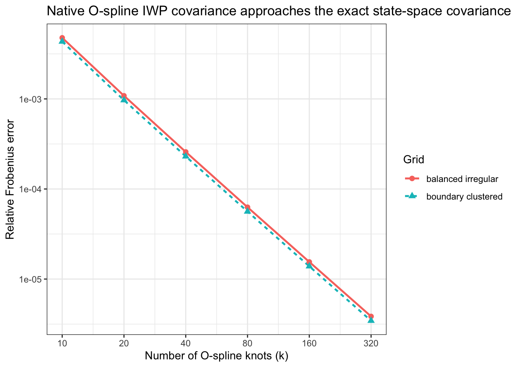
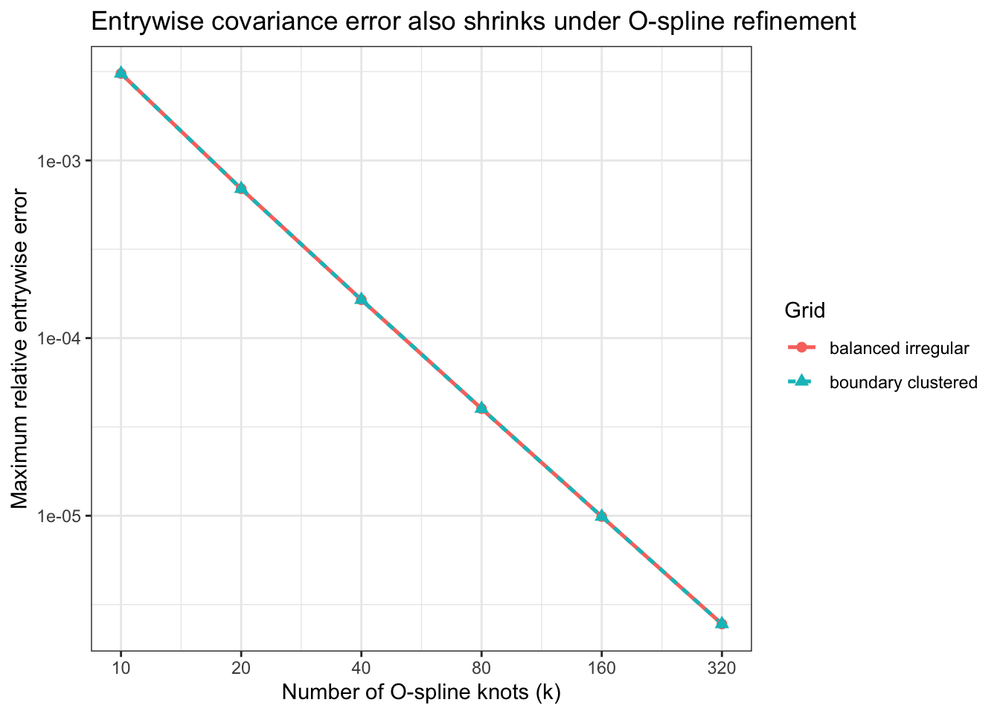

Last updated: 2026-10-03
Checks: 7 0
Knit directory: near_monotone_smoothing/
This reproducible R Markdown analysis was created with workflowr (version 1.7.2). The Checks tab describes the reproducibility checks that were applied when the results were created. The Past versions tab lists the development history.
Great! Since the R Markdown file has been committed to the Git repository, you know the exact version of the code that produced these results.
Great job! The global environment was empty. Objects defined in the global environment can affect the analysis in your R Markdown file in unknown ways. For reproduciblity it’s best to always run the code in an empty environment.
The command set.seed(20240619) was run prior to running
the code in the R Markdown file. Setting a seed ensures that any results
that rely on randomness, e.g. subsampling or permutations, are
reproducible.
Great job! Recording the operating system, R version, and package versions is critical for reproducibility.
Nice! There were no cached chunks for this analysis, so you can be confident that you successfully produced the results during this run.
Great job! Using relative paths to the files within your workflowr project makes it easier to run your code on other machines.
Great! You are using Git for version control. Tracking code development and connecting the code version to the results is critical for reproducibility.
The results in this page were generated with repository version c20e64c. See the Past versions tab to see a history of the changes made to the R Markdown and HTML files.
Note that you need to be careful to ensure that all relevant files for
the analysis have been committed to Git prior to generating the results
(you can use wflow_publish or
wflow_git_commit). workflowr only checks the R Markdown
file, but you know if there are other scripts or data files that it
depends on. Below is the status of the Git repository when the results
were generated:
Ignored files:
Ignored: .DS_Store
Ignored: .claude/
Ignored: .vscode/
Ignored: BayesGP.Rcheck/
Ignored: BayesGP/
Ignored: BayesGP_0.1.2.tar.gz
Ignored: BayesGP_0.1.3.tar.gz
Ignored: Rplots.pdf
Ignored: analysis/.DS_Store
Ignored: analysis/.RData
Ignored: analysis/.Rhistory
Ignored: analysis/casecross.html
Ignored: code/.DS_Store
Ignored: code/.Rhistory
Ignored: code/fitGP_cc.o
Ignored: code/fitGP_cc.so
Ignored: code/fitGP_known_sd.o
Ignored: code/fitGP_known_sd.so
Ignored: code/sim_MGP.o
Ignored: code/sim_MGP.so
Ignored: outputs/
Ignored: talk/.DS_Store
Ignored: talk/BIRS-IMAG.key
Ignored: talk/Template/
Ignored: talk/presentation2024-latex-rebuild.pptx
Ignored: talk/presentation2024.key
Ignored: talk/presentation2024.key.backup-2026-05-11
Note that any generated files, e.g. HTML, png, CSS, etc., are not included in this status report because it is ok for generated content to have uncommitted changes.
These are the previous versions of the repository in which changes were
made to the R Markdown
(analysis/iwp_prior_covariance_convergence.rmd) and HTML
(docs/iwp_prior_covariance_convergence.html) files. If
you’ve configured a remote Git repository (see
?wflow_git_remote), click on the hyperlinks in the table
below to view the files as they were in that past version.
| File | Version | Author | Date | Message |
|---|---|---|---|---|
| Rmd | e65c248 | Ziang Zhang | 2026-10-03 | Initial commit of near-monotone smoothing workflowr project |
This notebook checks whether the newly added exact order-2
iwp computation = "state-space" path in the
local BayesGP fork agrees with the package’s native
O-spline approximation at the prior covariance level.
The comparison is done on the stochastic process part only. The boundary/global polynomial term is fixed at zero so that both constructions are compared on the same latent object.
Because both paths scale linearly in sd^2, the
convergence check is done at unit scale without loss of generality.
library(tidyverse)Warning: package 'ggplot2' was built under R version 4.5.2Warning: package 'readr' was built under R version 4.5.2── Attaching core tidyverse packages ──────────────────────── tidyverse 2.0.0 ──
✔ dplyr 1.1.4 ✔ readr 2.1.6
✔ forcats 1.0.1 ✔ stringr 1.6.0
✔ ggplot2 4.0.3 ✔ tibble 3.3.0
✔ lubridate 1.9.4 ✔ tidyr 1.3.1
✔ purrr 1.2.0
── Conflicts ────────────────────────────────────────── tidyverse_conflicts() ──
✖ dplyr::filter() masks stats::filter()
✖ dplyr::lag() masks stats::lag()
ℹ Use the conflicted package (<http://conflicted.r-lib.org/>) to force all conflicts to become errorslibrary(Matrix)
Attaching package: 'Matrix'
The following objects are masked from 'package:tidyr':
expand, pack, unpackdevtools::load_all("BayesGP", quiet = TRUE)Registered S3 method overwritten by 'LaplacesDemon':
method from
print.laplace aghqWarning: package 'testthat' was built under R version 4.5.2The exact state-space iwp implementation currently
requires left-boundary anchoring, so the evaluation grids are shifted to
start at zero before the covariance is constructed.
For the native O-spline approximation, k denotes the
knot count used in the underlying iwp object. This produces
k - 1 local O-spline coefficients.
evaluation_grids <- tibble(
grid_case = c("balanced irregular", "boundary clustered"),
x = list(
c(0.10, 0.35, 0.75, 1.30, 2.05, 2.95, 4.00, 5.20, 6.60, 8.15),
c(0.20, 0.24, 0.31, 0.52, 1.00, 1.80, 3.00, 4.70, 7.00, 8.50)
)
)
k_values <- c(10, 20, 40, 80, 160, 320)The exact covariance is built from the same exact observation operator used by the new state-space pathway:
\[ \Sigma_{\mathrm{exact}} = B_{\mathrm{exact}} Q_{\mathrm{exact}}^{-1} B_{\mathrm{exact}}^\top. \]
The native O-spline covariance is built from the original BayesGP machinery:
\[ \Sigma_{\mathrm{ospline}} = B_{\mathrm{ospline}} Q_{\mathrm{ospline}}^{-1} B_{\mathrm{ospline}}^\top. \]
build_exact_iwp_covariance <- function(x){
shifted_x <- sort(x - min(x))
support_x <- shifted_x[shifted_x > 0]
if(length(support_x) == 0){
return(matrix(0, nrow = length(shifted_x), ncol = length(shifted_x)))
}
exact_B <- build_exact_observation_matrix(
observed_x = shifted_x,
support_x = support_x
)
exact_P <- as.matrix(IWP_joint_prec(t_vec = support_x, p = 2))
as.matrix(exact_B %*% solve(exact_P, t(exact_B)))
}
build_ospline_iwp_covariance <- function(x, k){
shifted_x <- sort(x - min(x))
knot_sequence <- seq(0, max(shifted_x), length.out = k)
temp_data <- data.frame(z = shifted_x)
temp_instance <- methods::new(
"iwp",
response_var = as.name("y"),
smoothing_var = as.name("z"),
order = 2,
knots = knot_sequence,
k = k,
observed_x = shifted_x,
sd.prior = list(),
psd.prior = list(),
boundary.prior = list(),
data = temp_data,
X = matrix(0, nrow = 0, ncol = 0),
B = matrix(0, nrow = 0, ncol = 0),
P = matrix(0, nrow = 0, ncol = 0),
initial_location = 0,
region = range(c(0, shifted_x))
)
ospline_B <- as.matrix(local_poly(temp_instance))
ospline_P <- as.matrix(compute_weights_precision(temp_instance))
as.matrix(ospline_B %*% solve(ospline_P, t(ospline_B)))
}
frobenius_relative_error <- function(approximate_cov, exact_cov){
sqrt(sum((approximate_cov - exact_cov)^2) / sum(exact_cov^2))
}
max_relative_error <- function(approximate_cov, exact_cov){
max(abs(approximate_cov - exact_cov)) / max(abs(exact_cov))
}
variance_relative_error <- function(approximate_cov, exact_cov){
max(abs(diag(approximate_cov) - diag(exact_cov))) / max(abs(diag(exact_cov)))
}
format_results_table <- function(table_df){
table_df %>%
mutate(
k = as.integer(k),
`Basis coefficients` = k - 1L,
`Relative Frobenius error` = signif(frobenius_rel_error, 6),
`Max relative error` = signif(max_rel_error, 6),
`Variance relative error` = signif(variance_rel_error, 6)
) %>%
select(
`Grid case` = grid_case,
k,
`Basis coefficients`,
`Relative Frobenius error`,
`Max relative error`,
`Variance relative error`
)
}comparison_results <- evaluation_grids %>%
tidyr::crossing(k = k_values) %>%
mutate(
exact_covariance = map(x, build_exact_iwp_covariance),
ospline_covariance = map2(x, k, build_ospline_iwp_covariance),
frobenius_rel_error = map2_dbl(
ospline_covariance,
exact_covariance,
frobenius_relative_error
),
max_rel_error = map2_dbl(
ospline_covariance,
exact_covariance,
max_relative_error
),
variance_rel_error = map2_dbl(
ospline_covariance,
exact_covariance,
variance_relative_error
)
) %>%
select(grid_case, k, frobenius_rel_error, max_rel_error, variance_rel_error)
knitr::kable(
format_results_table(comparison_results),
caption = "Exact order-2 IWP state-space covariance versus native O-spline covariance.",
align = c("l", "r", "r", "r", "r", "r")
)| Grid case | k | Basis coefficients | Relative Frobenius error | Max relative error | Variance relative error |
|---|---|---|---|---|---|
| balanced irregular | 10 | 9 | 0.0047722 | 0.0030864 | 0.0030864 |
| balanced irregular | 20 | 19 | 0.0010844 | 0.0006925 | 0.0006925 |
| balanced irregular | 40 | 39 | 0.0002581 | 0.0001644 | 0.0001644 |
| balanced irregular | 80 | 79 | 0.0000628 | 0.0000401 | 0.0000401 |
| balanced irregular | 160 | 159 | 0.0000155 | 0.0000099 | 0.0000099 |
| balanced irregular | 320 | 319 | 0.0000039 | 0.0000025 | 0.0000025 |
| boundary clustered | 10 | 9 | 0.0043313 | 0.0030864 | 0.0030864 |
| boundary clustered | 20 | 19 | 0.0009685 | 0.0006925 | 0.0006925 |
| boundary clustered | 40 | 39 | 0.0002302 | 0.0001644 | 0.0001644 |
| boundary clustered | 80 | 79 | 0.0000562 | 0.0000401 | 0.0000401 |
| boundary clustered | 160 | 159 | 0.0000139 | 0.0000099 | 0.0000099 |
| boundary clustered | 320 | 319 | 0.0000034 | 0.0000025 | 0.0000025 |
dir.create("output", showWarnings = FALSE)
write.csv(
comparison_results,
file = "output/iwp_prior_covariance_convergence_metrics.csv",
row.names = FALSE
)comparison_results %>%
ggplot(aes(
x = k,
y = frobenius_rel_error,
color = grid_case,
group = grid_case,
linetype = grid_case,
shape = grid_case
)) +
geom_line(linewidth = 0.9) +
geom_point(size = 2.2) +
scale_x_log10(breaks = k_values) +
scale_y_log10() +
labs(
x = "Number of O-spline knots (k)",
y = "Relative Frobenius error",
color = "Grid",
linetype = "Grid",
shape = "Grid",
title = "Native O-spline IWP covariance approaches the exact state-space covariance"
) +
theme_bw()
comparison_results %>%
ggplot(aes(
x = k,
y = max_rel_error,
color = grid_case,
group = grid_case,
linetype = grid_case,
shape = grid_case
)) +
geom_line(linewidth = 0.9) +
geom_point(size = 2.2) +
scale_x_log10(breaks = k_values) +
scale_y_log10() +
labs(
x = "Number of O-spline knots (k)",
y = "Maximum relative entrywise error",
color = "Grid",
linetype = "Grid",
shape = "Grid",
title = "Entrywise covariance error also shrinks under O-spline refinement"
) +
theme_bw()
largest_k_summary <- comparison_results %>%
group_by(grid_case) %>%
filter(k == max(k)) %>%
ungroup()
knitr::kable(
format_results_table(largest_k_summary),
caption = "Largest-k summary for the IWP covariance comparison.",
align = c("l", "r", "r", "r", "r", "r")
)| Grid case | k | Basis coefficients | Relative Frobenius error | Max relative error | Variance relative error |
|---|---|---|---|---|---|
| balanced irregular | 320 | 319 | 3.9e-06 | 2.5e-06 | 2.5e-06 |
| boundary clustered | 320 | 319 | 3.4e-06 | 2.5e-06 | 2.5e-06 |
For the exact order-2 iwp state-space path added in this
local fork, the native BayesGP O-spline approximation is numerically
consistent at the prior covariance level:
k grows,So this check supports the claim that the new exact state-space
implementation is coherent with the package’s original O-spline
approximation for iwp when the two are compared under
matched left-boundary anchoring.
sessionInfo()R version 4.5.1 (2025-06-13)
Platform: aarch64-apple-darwin20
Running under: macOS Sequoia 15.6.1
Matrix products: default
BLAS: /System/Library/Frameworks/Accelerate.framework/Versions/A/Frameworks/vecLib.framework/Versions/A/libBLAS.dylib
LAPACK: /Library/Frameworks/R.framework/Versions/4.5-arm64/Resources/lib/libRlapack.dylib; LAPACK version 3.12.1
locale:
[1] en_CA/en_CA/en_CA/C/en_CA/en_CA
time zone: America/Chicago
tzcode source: internal
attached base packages:
[1] stats graphics grDevices utils datasets methods base
other attached packages:
[1] BayesGP_0.1.3 testthat_3.3.1 Matrix_1.7-4 lubridate_1.9.4
[5] forcats_1.0.1 stringr_1.6.0 dplyr_1.1.4 purrr_1.2.0
[9] readr_2.1.6 tidyr_1.3.1 tibble_3.3.0 ggplot2_4.0.3
[13] tidyverse_2.0.0
loaded via a namespace (and not attached):
[1] bitops_1.0-9 gridExtra_2.3 remotes_2.5.0
[4] inline_0.3.21 rlang_1.2.0 magrittr_2.0.5
[7] git2r_0.36.2 otel_0.2.0 matrixStats_1.5.0
[10] LaplacesDemon_16.1.8 compiler_4.5.1 loo_2.8.0
[13] vctrs_0.7.3 pkgconfig_2.0.3 fastmap_1.2.0
[16] ellipsis_0.3.2 promises_1.5.0 deSolve_1.40
[19] rmarkdown_2.30 sessioninfo_1.2.3 tzdb_0.5.0
[22] pracma_2.4.6 xfun_0.55 cachem_1.1.0
[25] jsonlite_2.0.0 later_1.4.4 parallel_4.5.1
[28] cluster_2.1.8.1 R6_2.6.1 bslib_0.9.0
[31] stringi_1.8.9 RColorBrewer_1.1-3 StanHeaders_2.32.10
[34] pkgload_1.4.1 rainbow_3.8 brio_1.1.5
[37] jquerylib_0.1.4 numDeriv_2016.8-1.1 Rcpp_1.1.1-1.1
[40] rstan_2.32.7 knitr_1.50 usethis_3.2.1
[43] hdrcde_3.4 httpuv_1.6.16 splines_4.5.1
[46] timechange_0.3.0 tidyselect_1.2.1 rstudioapi_0.17.1
[49] dichromat_2.0-0.1 yaml_2.3.12 TMB_1.9.23
[52] codetools_0.2-20 curl_7.0.0 pkgbuild_1.4.8
[55] lattice_0.22-7 ks_1.15.1 withr_3.0.3
[58] S7_0.2.2 evaluate_1.0.5 desc_1.4.3
[61] RcppParallel_5.1.11-1 mclust_6.1.2 pillar_1.11.1
[64] fda_6.3.0 whisker_0.4.1 KernSmooth_2.23-26
[67] stats4_4.5.1 pcaPP_2.0-5 generics_0.1.4
[70] rprojroot_2.1.1 RCurl_1.98-1.17 hms_1.1.4
[73] scales_1.4.0 glue_1.8.1 tools_4.5.1
[76] fds_1.8 fs_1.6.6 mvtnorm_1.3-3
[79] grid_4.5.1 QuickJSR_1.8.1 devtools_2.4.6
[82] colorspace_2.1-2 sfsmisc_1.1-23 tmbstan_1.0.91
[85] cli_3.6.6 workflowr_1.7.2 V8_8.0.1
[88] gtable_0.3.6 sass_0.4.10 digest_0.6.39
[91] aghq_0.4.1 farver_2.1.2 memoise_2.0.1
[94] htmltools_0.5.9 lifecycle_1.0.5 MASS_7.3-65